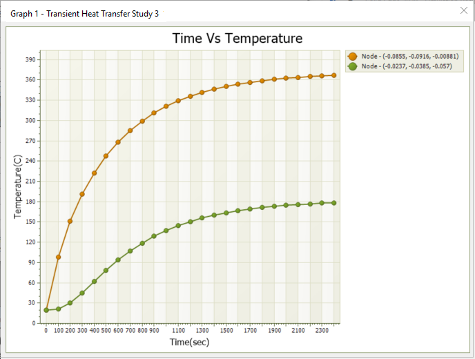
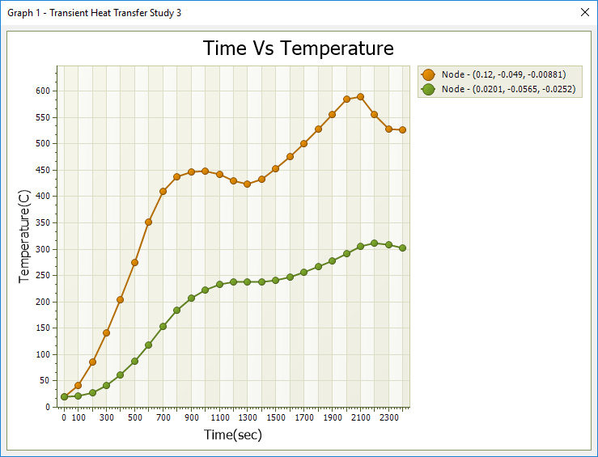
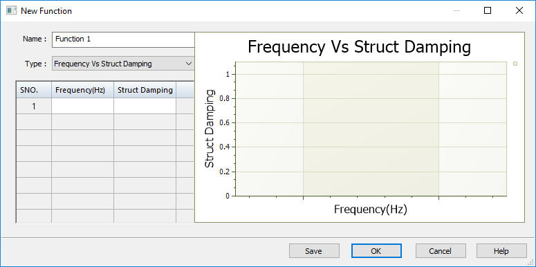

Using functions
In Solid Edge Simulation, functions provide time-dependent input to thermal loads in transient heat studies, and they provide frequency-dependent structural loading and damping forces in harmonic response studies. Functions are not applicable to linear static, normal modes, or buckling studies.
Functions for variable loading
Use the Simulation tab→Function group→Function command  to define the function as a table of X-Y (Time-Factor or Frequency-Factor) variable
values. When you apply a function, the Y scalar values are used to multiply the X
constant values. As you add or remove values for a function, a graph of the function
loading trajectory is plotted in the dialog box.
to define the function as a table of X-Y (Time-Factor or Frequency-Factor) variable
values. When you apply a function, the Y scalar values are used to multiply the X
constant values. As you add or remove values for a function, a graph of the function
loading trajectory is plotted in the dialog box.
You can define multiple functions in the same study. The functions are listed in the Simulation pane under the Functions node. You can use shortcut commands to edit, rename, and delete functions.

The Functions node is only available in eligible study containers, such as transient heat transfer and harmonic response studies.
After you reference a function in a time-dependent or frequency-dependent load and solve the study, you can use the Probe command to graph the nodal results at the maximum temperature or maximum frequency.
The first graph shows transient heat results for loading applied at a constant rate:

The second graph shows how the same loads applied by a function vary in intensity and time:

For more information, see Use a function as variable input to loads.
Functions for structural damping
In a harmonic response study, you also can use a function to apply a variable structural damping force to account for energy that is dissipated due primarily to some type of friction. Structural damping mitigates the displacement response of a structure or design. In this case, rather than using the Function command directly, you create the function table in the context of creating a Harmonic Response study type using the Options: Harmonic Frequency Analysis dialog box. You can apply structural damping at different modal frequencies by defining a Frequency vs. Structural Damping function.
For more information, see Harmonic response studies.
